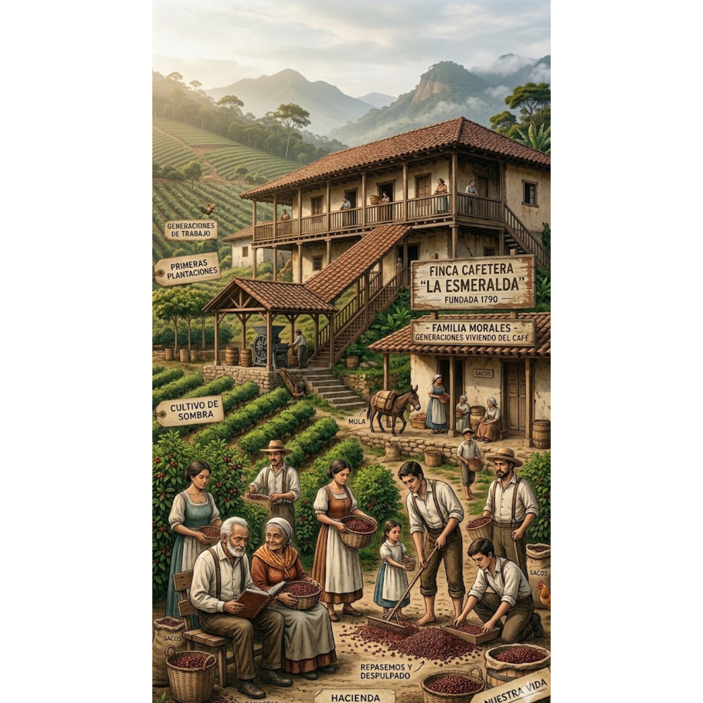

El grano
Cultivo, variedades y cuidado del café
El cultivo del café en Colombia se basa principalmente en la especie arábica, reconocida por su suavidad, aroma y calidad en taza. Según la Federación Nacional de Cafeteros de Colombia y Cenicafé, esta especie se adapta especialmente bien a las zonas montañosas del país, donde factores como la altitud, la temperatura y la humedad favorecen su desarrollo. A nivel internacional, organismos como la Organización Internacional del Café también destacan que el café arábica es el más valorado en el mercado global por sus características sensoriales.
Dentro de esta especie existen diversas variedades o tipos de planta (mata) que han sido cultivadas en Colombia. Entre las más representativas se encuentran Típica, Borbón, Caturra, Tabi y Castillo, cada una con diferencias en productividad, tamaño y resistencia. De acuerdo con Cenicafé, la variedad Castillo fue desarrollada específicamente para el contexto colombiano, destacándose por su resistencia a enfermedades como la roya y por mantener una buena calidad en taza.
El cultivo del café requiere condiciones específicas para desarrollarse adecuadamente. Investigaciones de Cenicafé y lineamientos de la Organización de las Naciones Unidas para la Alimentación y la Agricultura señalan que factores como la altitud (entre 1.200 y 1.800 metros), temperaturas moderadas, suelos fértiles y una adecuada distribución de lluvias son fundamentales para la producción de café de alta calidad. El proceso productivo incluye etapas como la siembra, el crecimiento de la planta, la floración, la formación del fruto y la cosecha, que en Colombia se realiza principalmente de forma manual para garantizar la selección de granos maduros.
Sin embargo, el cultivo del café también enfrenta diversos factores que afectan su desarrollo. Uno de los más importantes es la roya del café, una enfermedad causada por un hongo que afecta las hojas de la planta y reduce su productividad. Otro problema relevante es la broca del café, un insecto que perfora el grano y afecta su calidad. Según la Federación Nacional de Cafeteros de Colombia y estudios de Cenicafé, el manejo adecuado de estas amenazas es fundamental para mantener la producción y la calidad del café.
Además de las plagas y enfermedades, las condiciones climáticas juegan un papel determinante. Cambios en la temperatura, exceso o escasez de lluvias y fenómenos asociados al cambio climático pueden afectar el rendimiento del cultivo. La FAO advierte que estos factores representan un reto importante para la sostenibilidad del café a nivel mundial, lo que ha llevado a fortalecer la investigación y la implementación de prácticas agrícolas más resilientes.